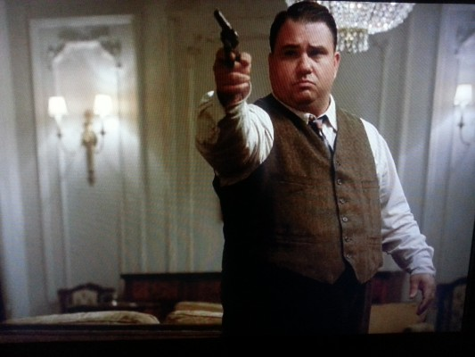

#5514 Puerto Ricans in Paris

 IMDB-Wertung: 5.2 / 10
IMDB-Wertung: 5.2 / 10  Metascore: 0
Metascore: 0 
Die verschwägerten New Yorker Cops Luis und Eddie sind in der New Yorker Polizeibehörde zuständig für die Wiederbeschaffung gestohlener Luxusgüter, bevor diese auf dem Schwarzmarkt vervielfältigt werden können. Als die besonders wertvolle Handtasche eines französischen Luxusdesigners verschwindet, werden Luis und Eddie als Spezialisten nach Paris geschickt. Beide erleben in der Glamour-Modewelt einen ziehmlichen Kulturschock.Obendrein hat Eddie hat mal wieder den Jahrestag mit seiner Frau Gloria vergessen und Luis Freundin Vanessa möchte unbedingt heiraten. Sowohl in ihren Ermittlungen als auch privat bewegen die beiden Schwäger sich auf dünner werdendem Eis...
Jahr: 2015
Dauer: 81 Minuten
FSK:
Land: USA Studio: Focus WorldTonspuren:
Untertitel:
Auflösung: 1080p (1920x808) Größe: 5939 MB
Genre: Komödie
Regisseur: Ian Edelman
Drehbuch: Sonja Bennett
Soundtrack:
Darsteller:
 Miriam Shor als Sargent Nora
Miriam Shor als Sargent Nora Luis Guzmán als Luis
Luis Guzmán als Luis Rosario Dawson als Vanessa
Rosario Dawson als Vanessa Brian Tyree Henry als Larry Labels
Brian Tyree Henry als Larry Labels Ravi Patel als Hassan
Ravi Patel als Hassan- Kathleen Alquist als Reporter
 Rosie Perez als Gloria
Rosie Perez als Gloria- Paulina Singer als Lexi
-  Mike Massimino als Detective
 Alice Taglioni als Colette
Alice Taglioni als Colette- Frédéric Anscombre als Vincent
- Jay DeYonker als Bellboy
 Julie Ferrier als Francesca
Julie Ferrier als Francesca Lilou Fogli als Kate
Lilou Fogli als Kate- Michaël Cohen als Jerome
- Jeff Gerard als Hipster Boy
- Hélène Kuhn als Hipster Girl
- Daniel Lundh als French Cop
- Olga Plojhar Bursikova als Andrea
 Jessica Boone als Secretary
Jessica Boone als Secretary- Edgar Garcia als Eddie
- Jaden Garcia als Anthony
- Charlotte Mangel als Ludivine
- Greta Slezakova als Woman in Club
- Luka Quinn als Charlie
- Diego Bransburg als Sheik
- Xavier Dumont als Daniel
- Emma Smetana als Brigitte
- Mathieu Bonnefont als French Detective
- Anerta Parris als Girl at Dinner
- Sara Riff als Door Girl
- Pierre Peyrichout als Board Member
Datei: X:\2015(N-Z)\Puerto Ricans in Paris (2015, FSK, 1920x808).mkv seit 13.02.2017
Festplatte: HD 2015(A-Z)
 Es gibt insgesamt 161 Filme in der Gruppe '2015(N-Z)'
Es gibt insgesamt 161 Filme in der Gruppe '2015(N-Z)'